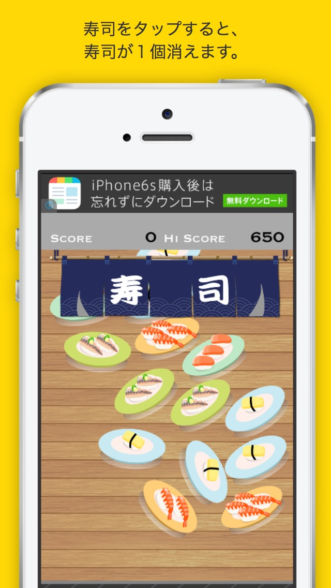

Sushi Eater for iOS
落ちてくる寿司をタップして消していくシンプルなゲームです。下のテーブルに落ちるまでに寿司を消していってください。スキマ時間にどうぞ！

ユーザーの愚痴を聞き会話するアプリです！愚痴を送信するとキャラクターが返答を返してくれます。ボットキャラ相手にあれこれたくさん話してみてください。普段リアルや SNS で言えないようなことを言っても大丈夫、キャラたちが全部受け答えてくれます！不思議に気分が晴れてくるかもしれません。自由にしゃべって気分転換しましょう！
落ちてくる寿司をタップして消していくシンプルなゲームです。下のテーブルに落ちるまでに寿司を消していってください。スキマ時間にどうぞ！